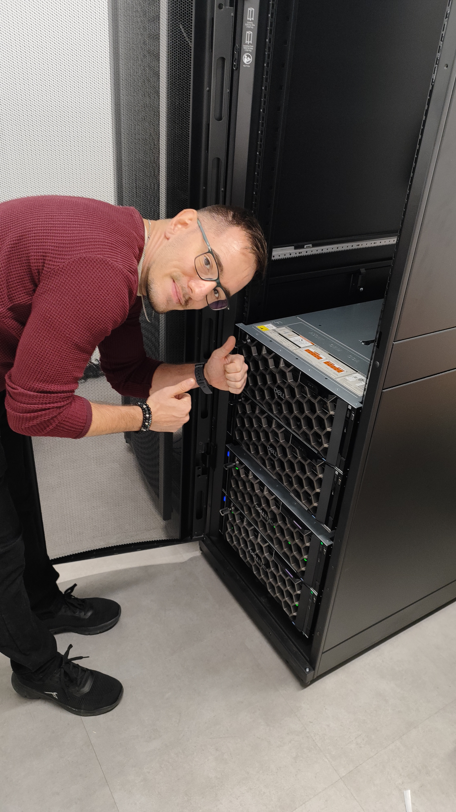

Sobre Mí

Soy Técnico Informático con experiencia en instalación, configuración y mantenimiento de infraestructura IT.
Especializado en equipos de sobremesa, portátiles.Me enfoco en garantizar la estabilidad y correcto funcionamiento de los sistemas.
Siempre buscando nuevas oportunidades para aprender y crecer profesionalmente.
Habilidades
Frontend
HTML, CSS (En proceso)
Backend
Python (en proceso)
Hardware
DELL, Fortinet, SuperMicro, MSI,
Intel, Nvidia, AMD
Asus, Corsair
Otros
En proceso...